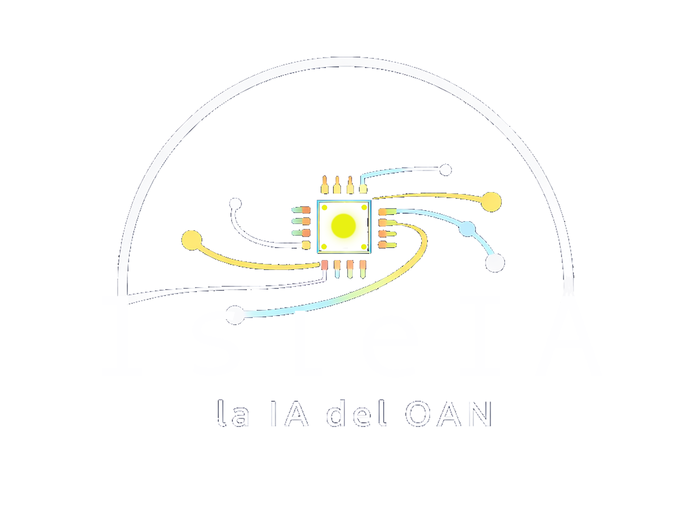
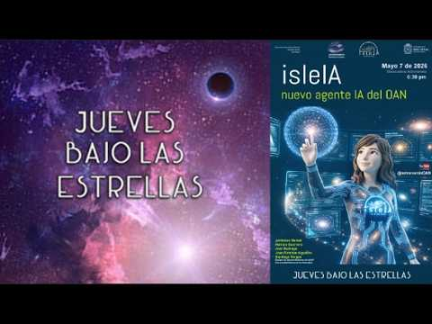

Revisiones bibliográficas veloces
Permite a los investigadores cruzar información compleja y encontrar en segundos antecedentes científicos o metodologías de tesis específicas, por ejemplo, en astrofísica solar.
LA INTELIGENCIA ARTIFICIAL DEL OBSERVATORIO
Más de veinte años de ciencia, conectados mediante inteligencia artificial.
isleIA es el primer agente de inteligencia artificial desarrollado por la Universidad Nacional de Colombia (UNAL), creado específicamente en el Observatorio Astronómico Nacional (OAN).
Impulsado por docentes y estudiantes de pregrado, maestría y doctorado, el proyecto fue presentado oficialmente en mayo de 2026. Su principal objetivo es digitalizar y conectar más de veinte años de producción científica, tesis de grado y archivos históricos del Observatorio.

Permite a los investigadores cruzar información compleja y encontrar en segundos antecedentes científicos o metodologías de tesis específicas, por ejemplo, en astrofísica solar.
Puede interpretar preguntas directas sobre fórmulas o expresiones matemáticas contenidas en los documentos.
Ayuda a identificar cómo han evolucionado los métodos de investigación astronómica en las últimas décadas.
Además de sus usos académicos, apoya la organización y consulta de la documentación del archivo histórico de la institución.
TELEVISIÓN UNAL
Descubre cómo funciona la herramienta y su impacto académico en este informe de Televisión UNAL.
Ver el informe en TikTok ↗El video embebido es proporcionado por TikTok. Si tu navegador no permite reproducirlo, abre el informe original.

La presentación del 7 de mayo de 2026 en Jueves bajo las estrellas reúne al equipo y permite conocer la iniciativa desde su lanzamiento.
Ver la presentación completa ↗Contacta al Observatorio para consultar el acceso a isleIA, su disponibilidad y las condiciones de uso.
Consultar sobre isleIA ↗Esta página presenta el proyecto y sus videos; no es una interfaz de conversación con isleIA.